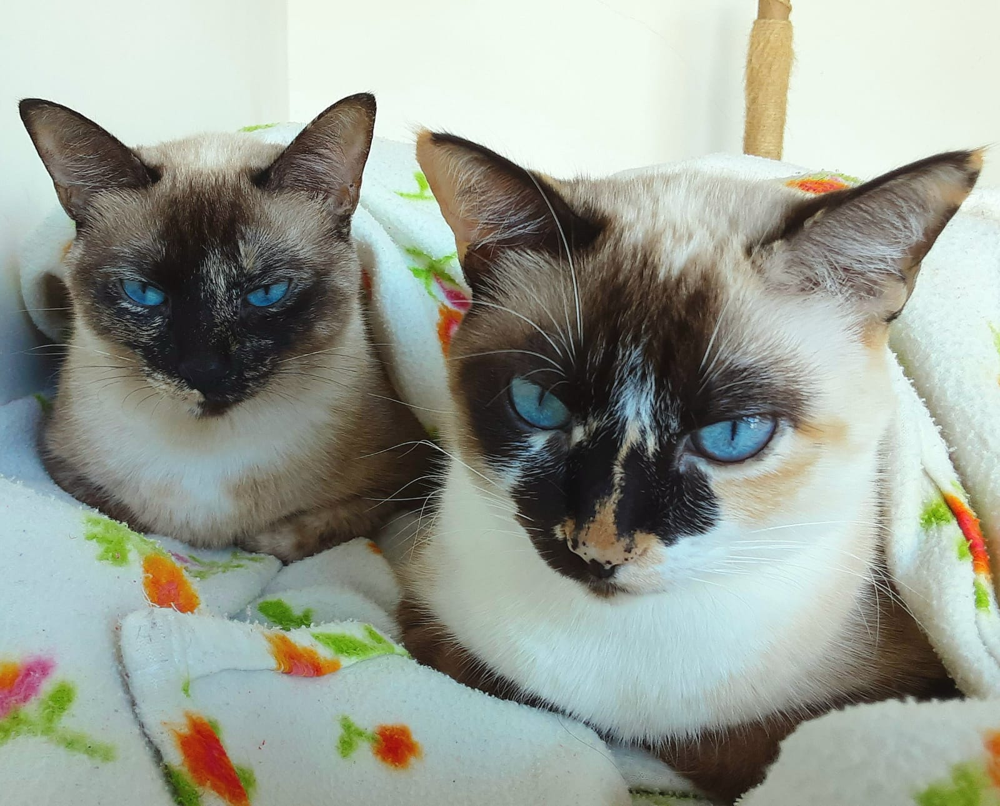
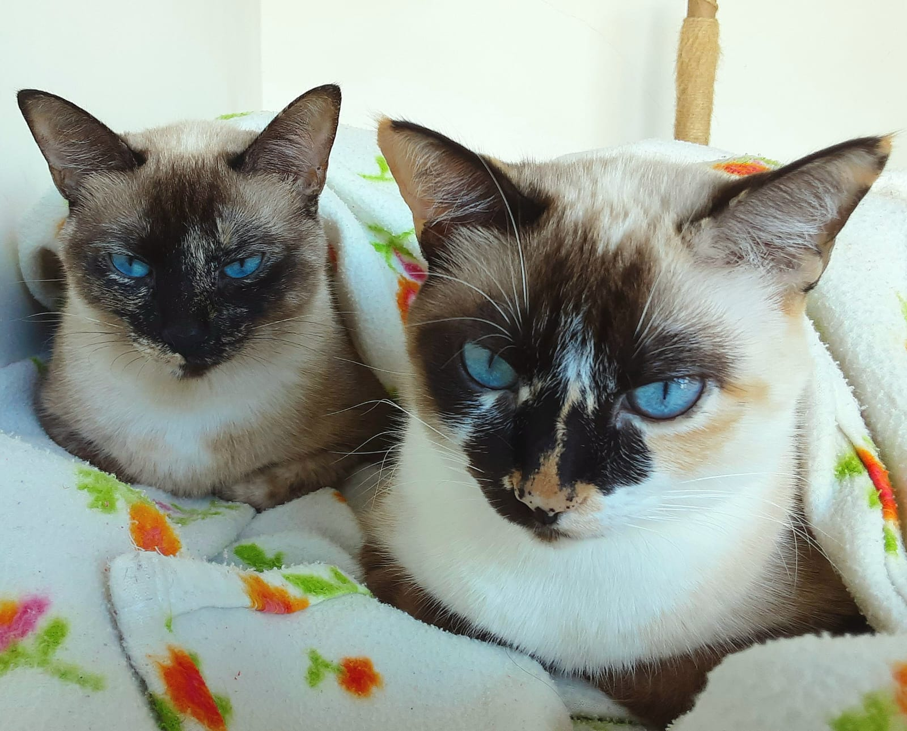

UERJ (Universidade do Estado do Rio de Janeiro)
Professor Adjunto (Assistant Professor)
R. São Francisco Xavier, 524
Maracanã
Rio de Janeiro, Brasil
Email: lucas.aragao(at)uerj(dot)br
I am Professor Adjunto (Assistant Professor) at UERJ. I earned my PhD at IMPA under the supervision of Rob Morris. My research focuses mainly on extremal, probabilistic, and additive combinatorics.
with Jonathan Chapman, Miquel Ortega, and Victor Souza. Submitted
with João Pedro Marciano and Walner Mendonça.
European Journal of Combinatorics, 124 (2025), 104082
The diameter of randomly twisted hypercubeswith Maurício Collares, Gabriel Dahia, João Pedro Marciano.
European Journal of Combinatorics, 124 (2025), 104078
Localised graph Maclaurin inequalitieswith Victor Souza.
Annals of Combinatorics, 28 (2024), 1021-1033
A lower bound for set-colouring Ramsey numberswith Maurício Collares, João Pedro Marciano, Taísa Martins, and Robert Morris.
Random Structures & Algorithms, 64 (2024), 157-169
with João Pedro Marciano and Walner Mendonça. Submitted
On the number of monochromatic solutions to multiplicative equationswith Jonathan Chapman, Miquel Ortega, and Victor Souza. Submitted
The diameter of randomly twisted hypercubeswith Maurício Collares, Gabriel Dahia, João Pedro Marciano. Submitted
Localised graph Maclaurin inequalitieswith Victor Souza. Submitted